Перенос файла с телефона на пк и наоборот
Рассмотрим пример ниже, чтобы понять заголовок этой страницы:
Вы с фоткали с телефона какую-то картинку, её надо перенести на пк(ноутбук). Как это сделать?
Для начала надо подготовить компоненты:
- Ваш телефон (где находится картинка которая нам нужна)
- Пк или ноутбук, на который надо перекинуть
- Провод от зарядки

Приступим к самому процессу:
- Вытащите провод от зарядки, которым вы подзаряжаете свой телефон. 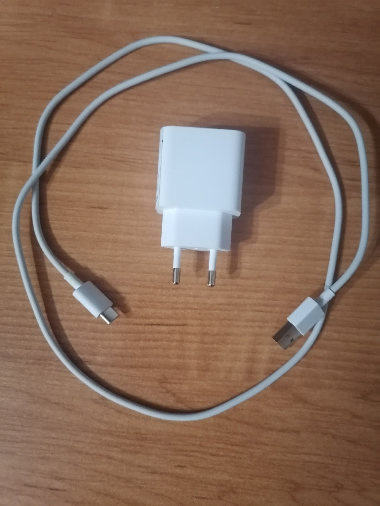
- Найдите вот такое отверстие или как его называют порт. 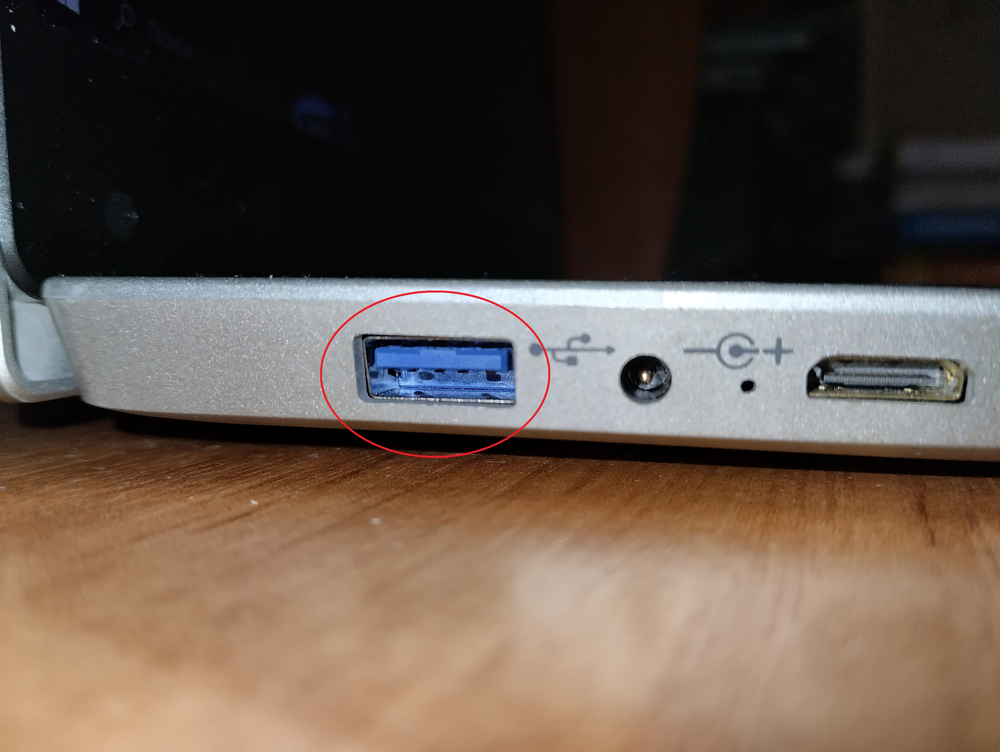
- Один конец провода подключите к телефону, другой к пк или ноутбуку. 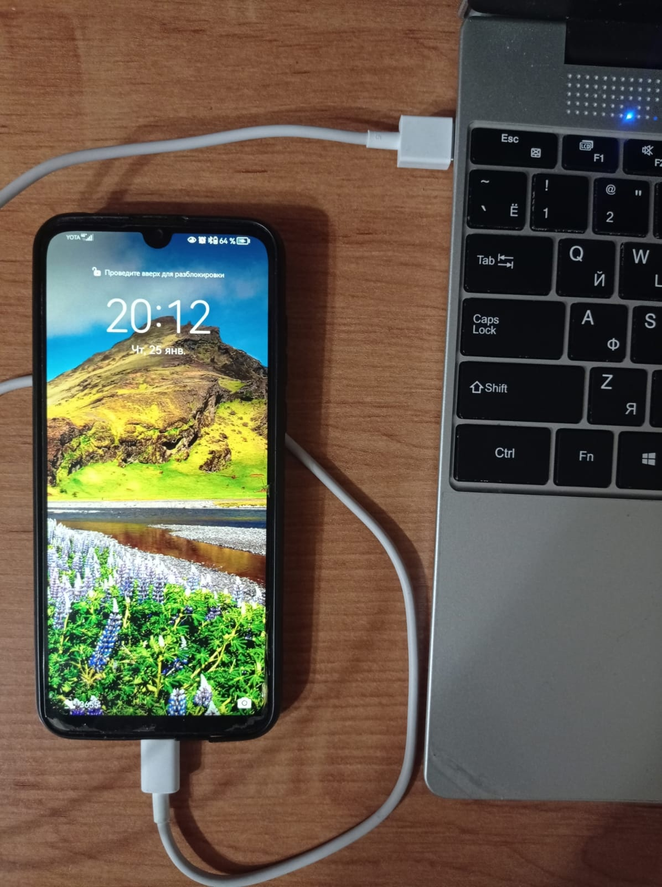
- Как только вы разблокируете телефон, вылезет сообщение. Нажмите на него и переключите с Только зарядка на Передача фото.
- Осталось только, узнать путь к вашей фотографии.
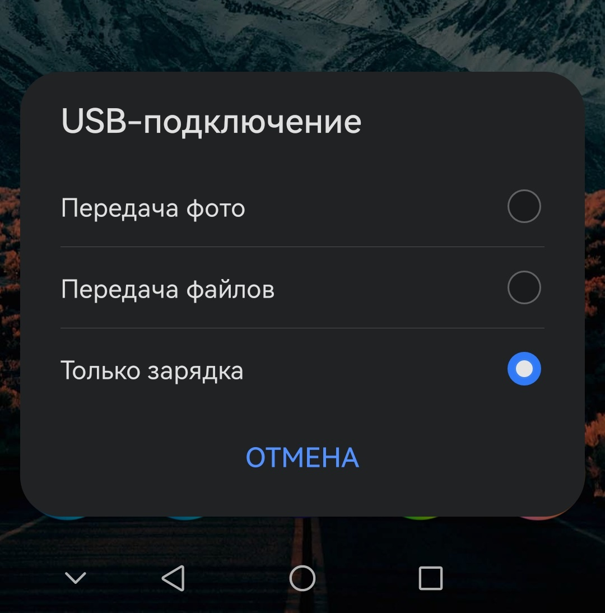
Если вы случайно закрыли панельку USB-подключение или она не появилась, то
вы можете высунуть конец провода из телефона, и вставить его обратно.
Путь - это маршрут. Он имеет остановки, которые в нашем случае, называются папками. На телефонах и пк все лежит в папочках, поэтому найти нужную фотку будет не просто.
Перейдем ненадолго к телефону:
Чтобы найти путь к вашей фотографии надо:
- Открыть галерею.
- Нажмите на картинку, которую вы собираетесь перекинуть.
- Найдите либо три точки или значок i. Если у вас i, то просто нажмите на нее. Если три точки, то найдите раздел свойства или сведения и нажмите на неё. 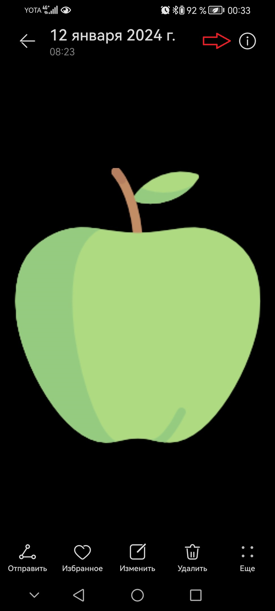
- Теперь надо найти строчку с путем. 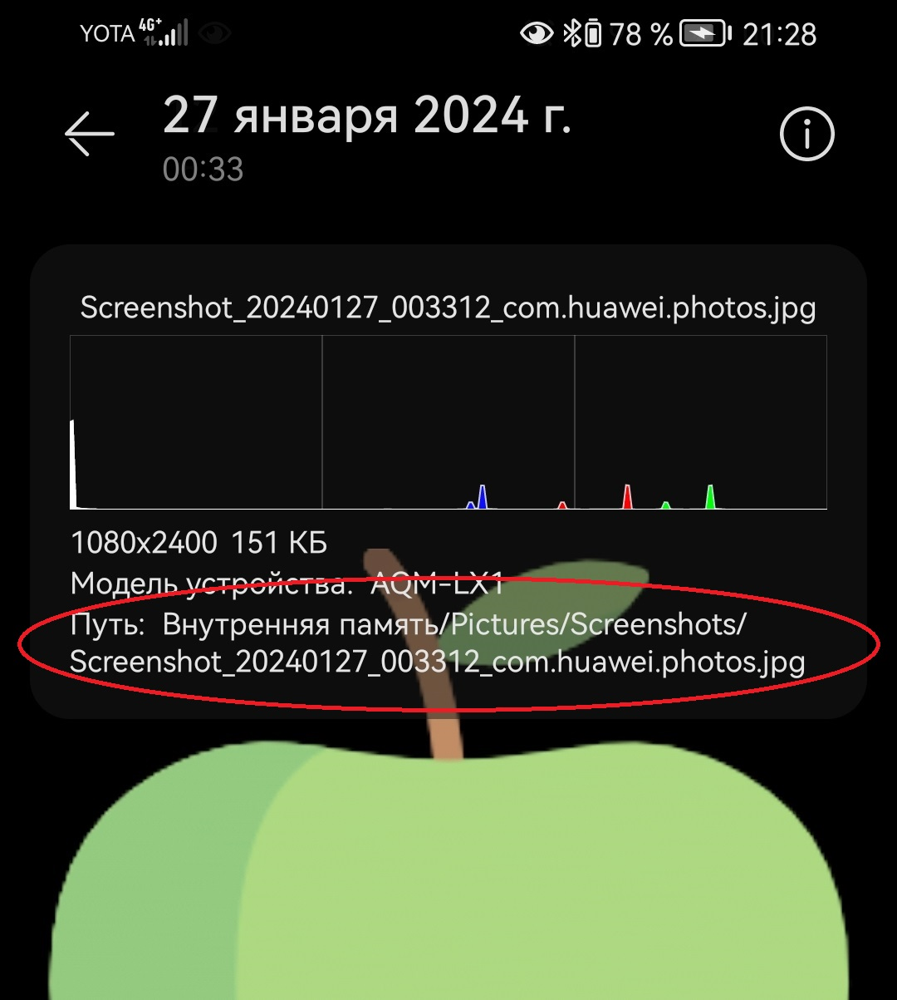
Путь к моей картинке получился таким:( Внутренняя память/Pictures/Screenshots/Screenshot_20240127_003312_com.huawei.photos.jpg). У вас будет другой путь. Он покажет по каким папкам нам надо пройтись, чтобы найти нужную нам картинку.
Вернемся обратно к пк или ноутбуку:
- Откроем на рабочем столе "Этот компьютер"(или как его называют проводник). 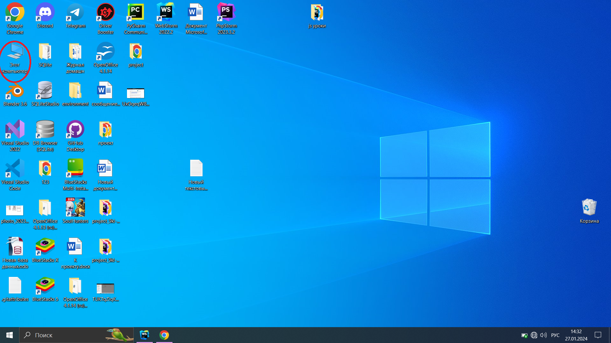
- В проводнике найдем наш подключенный телефон. Нажмем на него. 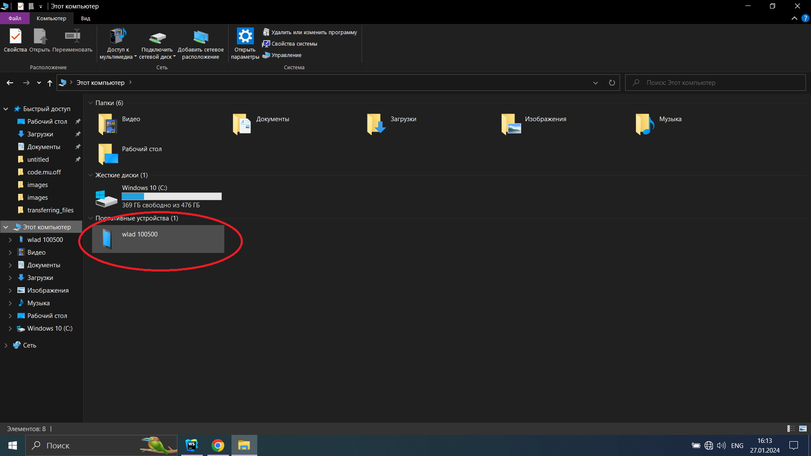
- Верхняя строчка будет показывать в какой папке мы находимся. 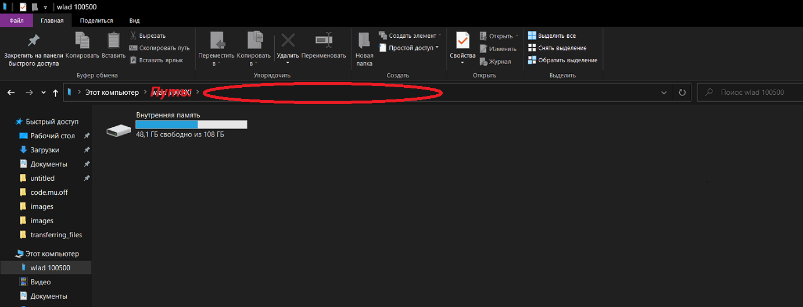
- Переходите по папкам чтобы прийти к картинке. 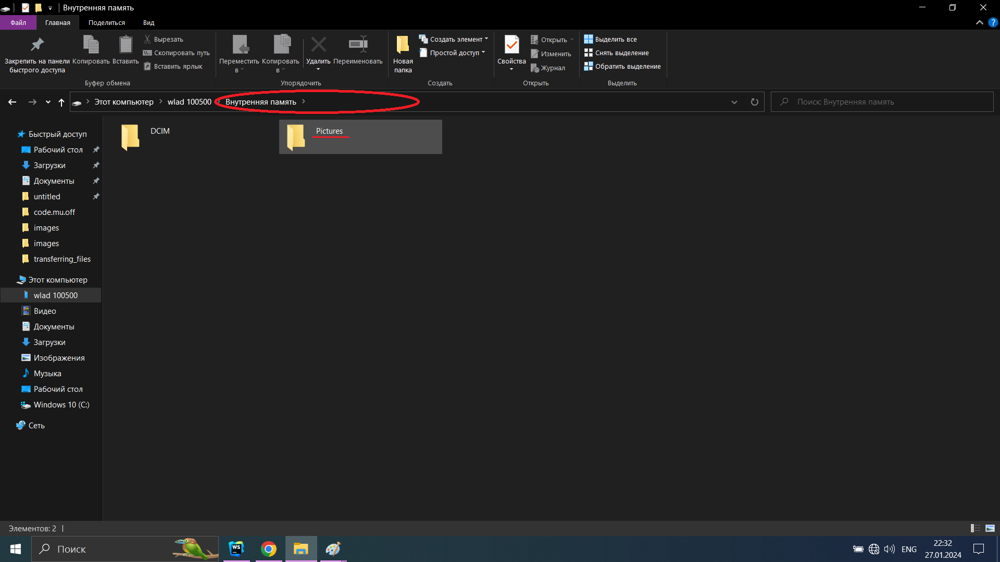
- Напомню, вы не должны повторять мой путь точь в точь, т. к. мой путь к картинки отличается от вашего. 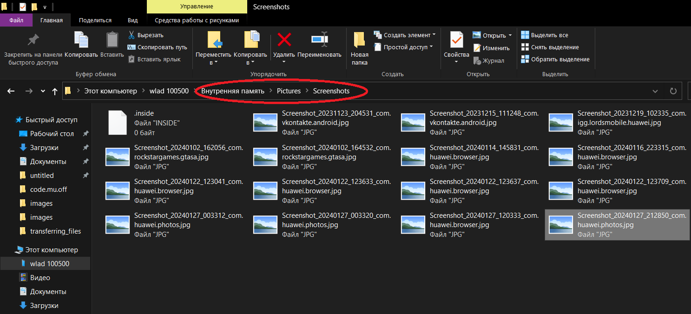
- Чтобы закончить работу вытащите аккуратно провод с пк (или ноутбука) и телефона.